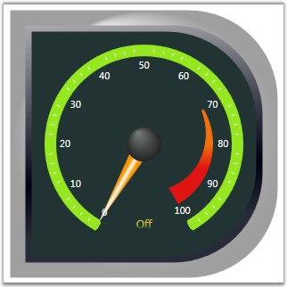

Styles and Templates will allow creating visually compelling circular gauge to standardize on a particular appearance. Circular gauge template can be rewritten with proper name for parent inner border to provide proper circular scale adorner support. Typically gauge scales and other child elements are rendered through Gauge adorner. So better keep top border name as ContinerBorder. Define the template for the circular gauge and apply through style or StaticResource call.
Apart from Style property, circular gauge provides three additional style related properties such as FirstFrameStyle, SecondFrameStyle and InnerFrameStyle.
· FirstFrameStyle—style for first frame border in circular gauge.
· SecondFrameStyle—style for second frame border in circular gauge.
· InnerFrameStyle—style for inner frame border in circular gauge.
Through these properties we can set value for internal frames as follows. Corner Radius value has been changed as 0,100,100,0 for all the internal frame borders.
|
[XAML]
<!--First Frame Style.--> <Style x:Key="FirstBorderFrameStyle" TargetType="{x:Type Border}"> <Setter Property="HorizontalAlignment" Value="Center"/> <Setter Property="VerticalAlignment" Value="Center"/> <Setter Property="CornerRadius" Value="0,100,100,0"/> </Style>
<!--Second Frame Style.--> <Style x:Key="SecondBorderFrameStyle" TargetType="{x:Type Border}"> <Setter Property="HorizontalAlignment" Value="Stretch"/> <Setter Property="VerticalAlignment" Value="Stretch"/> <Setter Property="CornerRadius" Value="0,100,100,0"/> <Setter Property="Margin" Value="17"/> </Style>
<!--Inner Frame Style.--> <Style x:Key="InnerCircleStyle" TargetType="{x:Type Border}"> <Setter Property="HorizontalAlignment" Value="Stretch"/> <Setter Property="VerticalAlignment" Value="Stretch"/> <Setter Property="CornerRadius" Value="0,100,100,0"/> <Setter Property="Margin" Value="7"/> </Style>
<!--Hosting Circular Gauge.--> <syncfusion:CircularGauge ApplyFrameStyles="True" FirstFrameStyle="{StaticResource FirstBorderFrameStyle}" SecondFrameStyle="{StaticResource SecondBorderFrameStyle}" InnerFrameStyle="{StaticResource InnerCircleStyle}" Name="circularGauge1"> </syncfusion:CircularGauge> |
Press F5 to run the application; you should see circular gauge like the following image.

Figure 26: Circular Gauge with Inner Frame Style